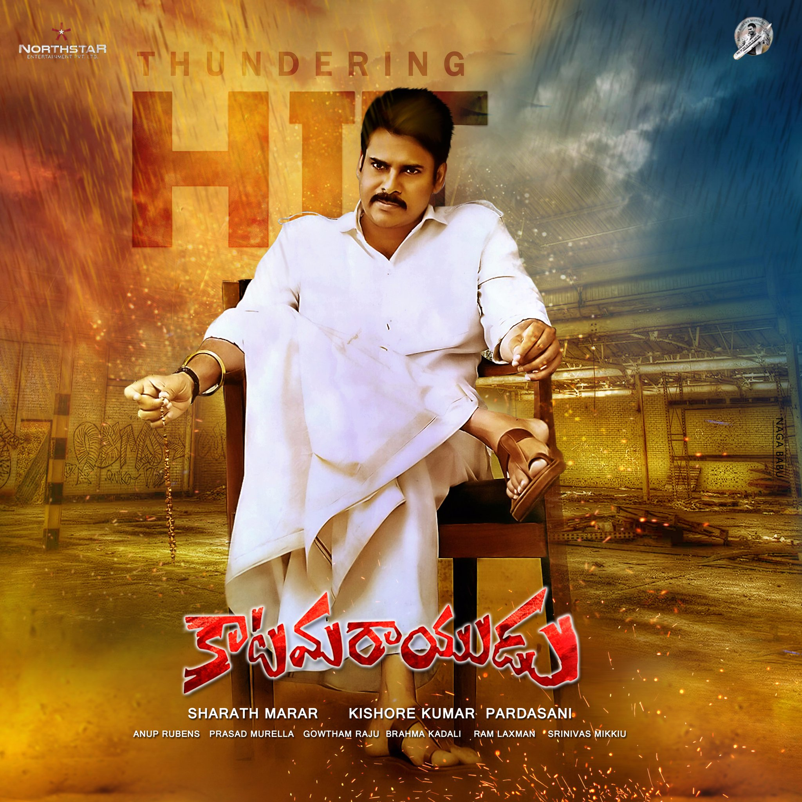

Pawan Kalyan was born as Konidala Kalyan Babu[33] on 2 September 1971[2] in a Telugu family to Konidala Venkata Rao and Anjana Devi in Bapatla, Andhra Pradesh.[37][38] Venkata Rao worked as a police constable and was transferred on a regular basis. Kalyan was educated at the St. Joseph's High School in Nellore.[39] In 1997, he was awarded the title "Pawan" by the Isshin-ryū Karate Association after a public martial arts demonstration.[22][40] He also holds a black belt in Karate.[21]


In March 2014, Kalyan founded the Janasena Party and actively campaigned in the 2014 elections.Pawan Kalyan announced the Jana Sena Party's 2019 election manifesto at a public meeting in Rajahmundry, outlining measures to improve the lives of farmers, farm laborers, women, youth, and students.[182][183] He announced that his party would contest the 2019 elections in Andhra Pradesh and Telangana in alliance with the Bahujan Samaj Party (BSP), Communist Party of India (CPI), and Communist Party of India (Marxist) (CPM).
Pawan Kalyan announced the Jana Sena Party's 2019 election manifesto at a public meeting in Rajahmundry, outlining measures to improve the lives of farmers, farm laborers, women, youth, and students.[182][183] He announced that his party would contest the 2019 elections in Andhra Pradesh and Telangana in alliance with the Bahujan Samaj Party (BSP), Communist Party of India (CPI), and Communist Party of India (Marxist) (CPM).[184][185] While actively campaigning across Andhra Pradesh, Kalyan experienced health issues, including dizziness and nausea. He was hospitalized and treated in Vijayawada after experiencing vomiting, dehydration, and drowsiness at Gannavaram airport. The campaign resumed once he recovered.[186][187] Jana Sena Party contested in 140 constituencies in the 2019 Andhra Pradesh Legislative Assembly election, of which, Kalyan contested in two constituencies – Gajuwaka[188] and Bhimavaram.[189] He lost in both constituencies to candidates from YSR Congress Party.[190] His party was able to win from Razole, making it the only seat it won in the election.[191] But the party garnered around 6% vote share. After the 2019 setback, Kalyan and JSP focused on highlighting issues like farmer welfare, transparent governance, poor infrastructure, illegal sand mining, women's safety, land encroachment etc. On 3 November 2019, Kalyan led a long march in Visakhapatnam in support of construction workers, against YSR Congress Party, who have been facing unemployment due to a shortage of supply of sand in Andhra Pradesh.[192] On 16 January 2020, Kalyan announced his party's alliance with BJP, after three years of distancing from it.[193] On 12 February 2020, he led a rally for justice to Sugali Preethi, a 15-year-old girl who was raped and murdered, in Kurnool.[194] He demanded an inquiry by Central Bureau of Investigation (CBI) into the incident.[195] In late 2022, Kalyan started 'Jana Vani,' a series of small public meetings to hear people's grievances. In 2023, he launched a state-wide yatra in his customized vehicle 'Varahi,' aimed at strengthening the party's connection with the voters.[32]


On 12 June 2024, Pawan Kalyan was sworn in as a cabinet minister in the Government of Andhra Pradesh, and on 16 June 2024, he was announced as the deputy chief minister of Andhra Pradesh.[196] He is also the Minister of Panchayat Raj, Rural Development & Rural Water Supply; Environment, Forests, Science & Technology.[197][198] Pawan Kalyan, as deputy chief minister of Andhra Pradesh, emphasized transparent governance, directing his officers to ensure that contracts and other works were executed correctly and that all transactions were accounted for. He stressed the importance of not involving any tainted money and avoiding recommendations, aiming to make the system transparent for the public.[199] During his visit to Pitapuram, he pledged to develop the constituency into a model area. Key projects included developing temple tourism, establishing a reeling center for sericulturists, a chilli crushing unit, and a cold storage unit.[199] He also took stock of coastal erosion in Uppada, working with officials from the Ministry of Earth Science and the Maritime Board.[200]